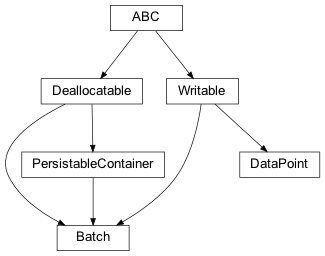
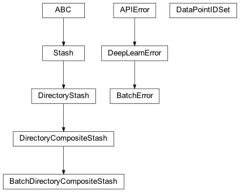
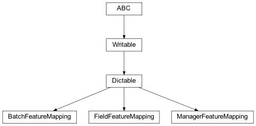
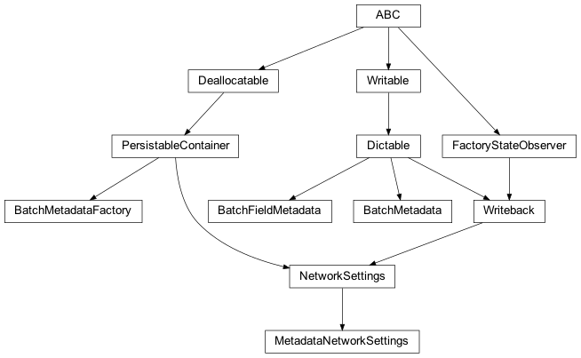
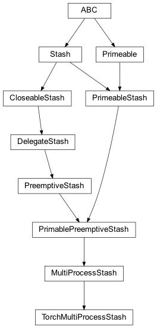
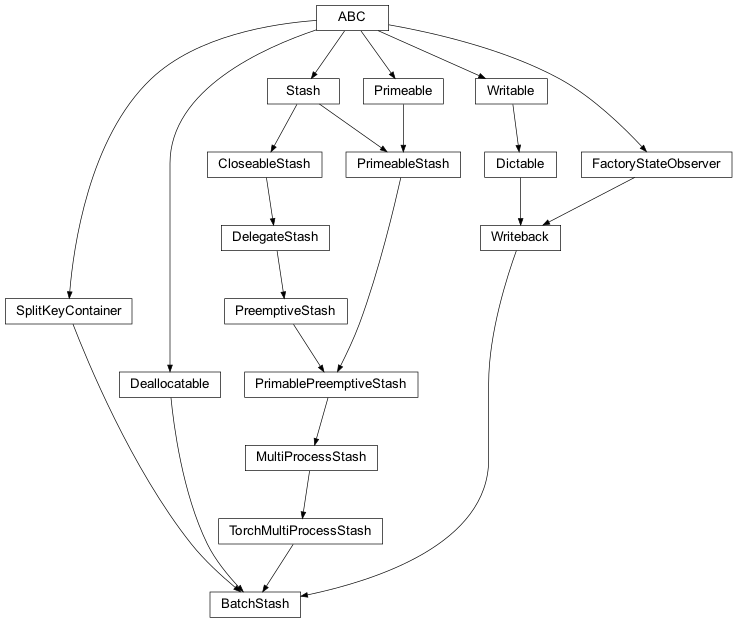

zensols.deeplearn.batch package¶
Submodules¶
zensols.deeplearn.batch.domain¶

-
class
zensols.deeplearn.batch.domain.Batch(batch_stash, id, split_name, data_points)[source]¶ Bases:
zensols.persist.annotation.PersistableContainer,zensols.persist.dealloc.Deallocatable,zensols.config.writable.WritableContains a batch of data used in the first layer of a net. This class holds the labels, but is otherwise useless without at least one embedding layer matrix defined.
The user must subclass, add mapping meta data, and optionally (suggested) add getters and/or properties for the specific data so the model can by more Pythonic in the PyTorch
torch.nn.Module.-
STATES= {'d': 'decoded', 'e': 'encoded', 'k': 'deallocated', 'n': 'nascent', 't': 'memory copied'}¶ A human friendly mapping of the encoded states.
-
__init__(batch_stash, id, split_name, data_points)¶ Initialize self. See help(type(self)) for accurate signature.
-
property
attributes¶ Return the attribute batched tensors as a dictionary using the attribute names as the keys.
-
batch_stash: BatchStash¶ Ephemeral instance of the stash used during encoding and decoding.
-
data_points: Tuple[DataPoint]¶ The list of the data points given on creation for encoding, and
None’d out after encoding/pickinglin.
-
get_data_points()[source]¶ Return the data points used to create this batch. If the batch does not contain the data points (it has been decoded), then they are retrieved from the
batch_stashinstance’s feature stash.
-
get_label_classes()[source]¶ Return the labels in this batch in their string form. This assumes the label vectorizer is instance of
CategoryEncodableFeatureVectorizer.
-
get_label_feature_vectorizer()[source]¶ Return the label vectorizer used in the batch. This assumes there’s only one vectorizer found in the vectorizer manager.
- Parameters
batch – used to access the vectorizer set via the batch stash
- Return type
-
property
has_labels¶ Return whether or not this batch has labels. If it doesn’t, it is a batch used for prediction.
- Return type
-
id: int¶ The ID of this batch instance, which is the sequence number of the batch given during child processing of the chunked data point ID setes.
-
property
state_name¶
-
to()[source]¶ Clone this instance and copy data to the CUDA device configured in the batch stash.
- Return type
- Returns
a clone of this instance with all attribute tensors copied to the given torch configuration device
-
property
torch_config¶ The torch config used to copy from CPU to GPU memory.
- Return type
-
write(depth=0, writer=<_io.TextIOWrapper name='<stdout>' mode='w' encoding='utf-8'>, include_data_points=False)[source]¶ Write the contents of this instance to
writerusing indentiondepth.- Parameters
depth (
int) – the starting indentation depthwriter (
TextIOBase) – the writer to dump the content of this writable
-
-
class
zensols.deeplearn.batch.domain.DataPoint(id, batch_stash)[source]¶ Bases:
zensols.config.writable.WritableAbstract class that makes up a container class for features created from sentences.
-
__init__(id, batch_stash)¶ Initialize self. See help(type(self)) for accurate signature.
-
batch_stash: BatchStash¶ Ephemeral instance of the stash used during encoding only.
-
write(depth=0, writer=<_io.TextIOWrapper name='<stdout>' mode='w' encoding='utf-8'>)[source]¶ Write the contents of this instance to
writerusing indentiondepth.- Parameters
depth (
int) – the starting indentation depthwriter (
TextIOBase) – the writer to dump the content of this writable
-
zensols.deeplearn.batch.interface¶

Interface and simple domain classes.
-
class
zensols.deeplearn.batch.interface.BatchDirectoryCompositeStash(path, groups)[source]¶ Bases:
zensols.persist.composite.DirectoryCompositeStashA composite stash used for instances of
BatchStash.-
__init__(path, groups)[source]¶ Initialize using the parent class’s default pattern.
- Parameters
path (
Path) – the directory that will have to subdirectories with the files, they are namedINSTANCE_DIRECTORY_NAMEandCOMPOSITE_DIRECTORY_NAMEgroups (
Tuple[Set[str]]) – the groups of thedictcomposite attribute, which are sets of keys, each of which are persisted to their respective directoryattribute_name – the name of the attribute in each item to split across groups/directories; the instance data to persist has the composite attribute of type
dictload_keys – the keys used to load the data from the composite stashs in to the attribute
dictinstance; only these keys will exist in the loaded data, orNonefor all keys; this can be set after the creation of the instance as well
-
path: pathlib.Path¶
-
-
exception
zensols.deeplearn.batch.interface.BatchError[source]¶ Bases:
zensols.deeplearn.domain.DeepLearnErrorThrown for any batch related error.
-
__module__= 'zensols.deeplearn.batch.interface'¶
-
-
class
zensols.deeplearn.batch.interface.DataPointIDSet(batch_id, data_point_ids, split_name, torch_seed_context)[source]¶ Bases:
objectSet of subordinate stash IDs with feature values to be vectorized with
BatchStash. Groups of these are sent to subprocesses for processing in toBatchinstances.-
__init__(batch_id, data_point_ids, split_name, torch_seed_context)¶ Initialize self. See help(type(self)) for accurate signature.
-
torch_seed_context: Dict[str, Any]¶ The seed context given by
TorchConfig.
-
zensols.deeplearn.batch.mapping¶

Mapping metadata for batch domain specific instances.
-
class
zensols.deeplearn.batch.mapping.BatchFeatureMapping(label_attribute_name, manager_mappings)[source]¶ Bases:
zensols.config.dictable.DictableThe meta data used to encode and decode each feature in to tensors. It is best to define a class level instance of this in the
Batchclass and return it with_get_batch_feature_mappings.An example from the iris data set test:
MAPPINGS = BatchFeatureMapping( 'label', [ManagerFeatureMapping( 'iris_vectorizer_manager', (FieldFeatureMapping('label', 'ilabel', True), FieldFeatureMapping('flower_dims', 'iseries')))])
-
__init__(label_attribute_name, manager_mappings)¶ Initialize self. See help(type(self)) for accurate signature.
-
property
label_feature_id¶ Return the feature id of the label. This is the vectorizer used to transform the label data.
-
property
label_vectorizer_manager¶ Return the feature id of the label. This is the vectorizer used to transform the label data.
- Return type
-
manager_mappings: List[zensols.deeplearn.batch.mapping.ManagerFeatureMapping]¶ The manager level attribute mapping meta data.
-
write(depth=0, writer=<_io.TextIOWrapper name='<stdout>' mode='w' encoding='utf-8'>)[source]¶ Write this instance as either a
Writableor as aDictable. If class attribute_DICTABLE_WRITABLE_DESCENDANTSis set asTrue, then use thewrite()method on children instead of writing the generated dictionary. Otherwise, write this instance by first creating adictrecursively usingasdict(), then formatting the output.If the attribute
_DICTABLE_WRITE_EXCLUDESis set, those attributes are removed from what is written in thewrite()method.Note that this attribute will need to be set in all descendants in the instance hierarchy since writing the object instance graph is done recursively.
-
-
class
zensols.deeplearn.batch.mapping.FieldFeatureMapping(attr, feature_id, is_agg=False, attr_access=None, is_label=False)[source]¶ Bases:
zensols.config.dictable.DictableMeta data describing an attribute of the data point.
-
__init__(attr, feature_id, is_agg=False, attr_access=None, is_label=False)¶ Initialize self. See help(type(self)) for accurate signature.
-
attr_access: str = None¶ The attribute on the source
DataPointinstance (seeattribute_accessor).
-
property
attribute_accessor¶ Return the attribute name on the
DataPointinstance. This usesattr_accessif it is notNone, otherwise, useattr.
-
is_agg: bool = False¶ If
True, tuplize across all data points and encode as one tuple of data to create the batched tensor on decode; otherwise, each data point feature is encoded and concatenated on decode.
-
is_label: bool = False¶ Whether or not this field is a label. The is
Truein cases where there is more than one label. In these cases, usually which label to use changes based on the model (i.e. word embedding vs. BERT word piece token IDs).This is used in
Batchto skip label vectorization while encoding of prediction based batches.
-
write(depth=0, writer=<_io.TextIOWrapper name='<stdout>' mode='w' encoding='utf-8'>)[source]¶ Write this instance as either a
Writableor as aDictable. If class attribute_DICTABLE_WRITABLE_DESCENDANTSis set asTrue, then use thewrite()method on children instead of writing the generated dictionary. Otherwise, write this instance by first creating adictrecursively usingasdict(), then formatting the output.If the attribute
_DICTABLE_WRITE_EXCLUDESis set, those attributes are removed from what is written in thewrite()method.Note that this attribute will need to be set in all descendants in the instance hierarchy since writing the object instance graph is done recursively.
-
-
class
zensols.deeplearn.batch.mapping.ManagerFeatureMapping(vectorizer_manager_name, fields)[source]¶ Bases:
zensols.config.dictable.DictableMeta data for a vectorizer manager with fields describing attributes to be vectorized from features in to feature contests.
-
__init__(vectorizer_manager_name, fields)¶ Initialize self. See help(type(self)) for accurate signature.
-
fields: Tuple[zensols.deeplearn.batch.mapping.FieldFeatureMapping]¶ The fields of the data point to be vectorized.
-
vectorizer_manager_name: str¶ The configuration name that identifiees an instance of
FeatureVectorizerManager.
-
write(depth=0, writer=<_io.TextIOWrapper name='<stdout>' mode='w' encoding='utf-8'>)[source]¶ Write this instance as either a
Writableor as aDictable. If class attribute_DICTABLE_WRITABLE_DESCENDANTSis set asTrue, then use thewrite()method on children instead of writing the generated dictionary. Otherwise, write this instance by first creating adictrecursively usingasdict(), then formatting the output.If the attribute
_DICTABLE_WRITE_EXCLUDESis set, those attributes are removed from what is written in thewrite()method.Note that this attribute will need to be set in all descendants in the instance hierarchy since writing the object instance graph is done recursively.
-
zensols.deeplearn.batch.meta¶

Contains container classes for batch data.
-
class
zensols.deeplearn.batch.meta.BatchFieldMetadata(field, vectorizer)[source]¶ Bases:
zensols.config.dictable.DictableData that describes a field mapping in a batch object.
-
__init__(field, vectorizer)¶ Initialize self. See help(type(self)) for accurate signature.
-
field: zensols.deeplearn.batch.mapping.FieldFeatureMapping¶ The field mapping.
-
property
shape¶
-
vectorizer: zensols.deeplearn.vectorize.domain.FeatureVectorizer¶ The vectorizer used to map the field.
-
write(depth=0, writer=<_io.TextIOWrapper name='<stdout>' mode='w' encoding='utf-8'>)[source]¶ Write this instance as either a
Writableor as aDictable. If class attribute_DICTABLE_WRITABLE_DESCENDANTSis set asTrue, then use thewrite()method on children instead of writing the generated dictionary. Otherwise, write this instance by first creating adictrecursively usingasdict(), then formatting the output.If the attribute
_DICTABLE_WRITE_EXCLUDESis set, those attributes are removed from what is written in thewrite()method.Note that this attribute will need to be set in all descendants in the instance hierarchy since writing the object instance graph is done recursively.
-
-
class
zensols.deeplearn.batch.meta.BatchMetadata(data_point_class, batch_class, mapping, fields_by_attribute)[source]¶ Bases:
zensols.config.dictable.DictableDescribes metadata about a
Batchinstance.-
__init__(data_point_class, batch_class, mapping, fields_by_attribute)¶ Initialize self. See help(type(self)) for accurate signature.
-
batch_class: Type[zensols.deeplearn.batch.domain.Batch]¶ The
Batchclass, which are created at encoding time.
-
data_point_class: Type[zensols.deeplearn.batch.domain.DataPoint]¶ The
DataPointclass, which are created at encoding time.
-
fields_by_attribute: Dict[str, zensols.deeplearn.batch.meta.BatchFieldMetadata]¶ Mapping by field name to attribute.
-
mapping: zensols.deeplearn.batch.mapping.BatchFeatureMapping¶ The mapping used for encoding and decoding the batch.
-
write(depth=0, writer=<_io.TextIOWrapper name='<stdout>' mode='w' encoding='utf-8'>)[source]¶ Write this instance as either a
Writableor as aDictable. If class attribute_DICTABLE_WRITABLE_DESCENDANTSis set asTrue, then use thewrite()method on children instead of writing the generated dictionary. Otherwise, write this instance by first creating adictrecursively usingasdict(), then formatting the output.If the attribute
_DICTABLE_WRITE_EXCLUDESis set, those attributes are removed from what is written in thewrite()method.Note that this attribute will need to be set in all descendants in the instance hierarchy since writing the object instance graph is done recursively.
-
-
class
zensols.deeplearn.batch.meta.BatchMetadataFactory(stash)[source]¶ Bases:
zensols.persist.annotation.PersistableContainerCreates instances of
BatchMetadata.-
__init__(stash)¶ Initialize self. See help(type(self)) for accurate signature.
-
stash: zensols.deeplearn.batch.stash.BatchStash¶ The stash used to create the batches.
-
-
class
zensols.deeplearn.batch.meta.MetadataNetworkSettings(name, config_factory, batch_metadata_factory)[source]¶ Bases:
zensols.deeplearn.domain.NetworkSettingsA network settings container that has metadata about batches it recieves for its model.
-
__init__(name, config_factory, batch_metadata_factory)¶ Initialize self. See help(type(self)) for accurate signature.
-
property
batch_metadata¶ Return the batch metadata used by this model.
- Return type
-
batch_metadata_factory: zensols.deeplearn.batch.meta.BatchMetadataFactory¶ The factory that produces the metadata that describe the batch data during the calls to
_forward().
-
zensols.deeplearn.batch.multi¶

Multi processing with torch.
-
class
zensols.deeplearn.batch.multi.TorchMultiProcessStash(delegate, config, name, chunk_size, workers)[source]¶ Bases:
zensols.multi.stash.MultiProcessStashA multiprocessing stash that interacts with PyTorch in a way that it can access the GPU(s) in forked subprocesses using the
multiprocessinglibrary.- See
- See
zensols.deeplearn.TorchConfig.init()
-
__init__(delegate, config, name, chunk_size, workers)¶ Initialize self. See help(type(self)) for accurate signature.
zensols.deeplearn.batch.stash¶

-
class
zensols.deeplearn.batch.stash.BatchStash(name, config_factory, delegate, config, chunk_size, workers, data_point_type, batch_type, split_stash_container, vectorizer_manager_set, batch_size, model_torch_config, data_point_id_sets_path, decoded_attributes=<property object>, batch_limit=9223372036854775807)[source]¶ Bases:
zensols.deeplearn.batch.multi.TorchMultiProcessStash,zensols.dataset.interface.SplitKeyContainer,zensols.config.writeback.Writeback,zensols.persist.dealloc.DeallocatableA stash that vectorizes features in to easily consumable tensors for training and testing. This stash produces instances of
Batch, which is a batch in the machine learning sense, and the first dimension of what will become the tensor used in PyTorch. Each of these batches has a logical one to many relationship to that batche’s respective set of data points, which is encapsulated in theDataPointclass.The stash creates subprocesses to vectorize features in to tensors in chunks of IDs (data point IDs) from the subordinate stash using
DataPointIDSetinstances.To speed up experiements, all available features configured in
vectorizer_manager_setare encoded on disk. However, only thedecoded_attributes(see attribute below) are avilable to the model regardless of what was created during encoding time.The lifecycle of the data follows:
Feature data created by the client, which could be language features, row data etc.
Vectorize the feature data using the vectorizers in
vectorizer_manager_set. This creates the feature contexts (FeatureContext) specifically meant to be pickeled.Pickle the feature contexts when dumping to disk, which is invoked in the child processes of this class.
At train time, load the feature contexts from disk.
Decode the feature contexts in to PyTorch tensors.
The model manager uses the
tomethod to copy the CPU tensors to the GPU (where GPUs are available).
- See _process
for details on the pickling of the batch instances
-
__init__(name, config_factory, delegate, config, chunk_size, workers, data_point_type, batch_type, split_stash_container, vectorizer_manager_set, batch_size, model_torch_config, data_point_id_sets_path, decoded_attributes=<property object>, batch_limit=9223372036854775807)¶ Initialize self. See help(type(self)) for accurate signature.
-
property
batch_data_point_sets¶ Create the data point ID sets. Each instance returned will correlate to a batch and each set of keys point to a feature
DataPoint.- Return type
List[DataPointIDSet]
-
batch_limit: int = 9223372036854775807¶ The max number of batches to process, which is useful for debugging.
-
batch_size: int¶ The number of data points in each batch, except the last (unless the data point cardinality divides the batch size).
-
batch_type: Type[Batch]¶ The batch class to be instantiated when created batchs.
-
clear_all()[source]¶ Clear the batch, batch data point sets, and the source data (
split_stash_container).
-
data_point_id_sets_path: Path¶ The path of where to store key data for the splits; note that the container might store it’s key splits in some other location.
-
data_point_type: Type[DataPoint]¶ A subclass type of
DataPointimplemented for the specific feature.
-
property
decoded_attributes¶ The attributes to decode; only these are avilable to the model regardless of what was created during encoding time; if None, all are available.
-
load(name)[source]¶ Load a data value from the pickled data with key
name. Semantically, this method loads the using the stash’s implementation. For exampleDirectoryStashloads the data from a file if it exists, but factory type stashes will always re-generate the data.- See
get()
-
model_torch_config: TorchConfig¶ The PyTorch configuration used to (optionally) copy CPU to GPU memory.
-
prime()[source]¶ If the delegate stash data does not exist, use this implementation to generate the data and process in children processes.
-
split_stash_container: SplitStashContainer¶ The source data stash that has both the data and data set keys for each split (i.e.
trainvstest).
-
vectorizer_manager_set: FeatureVectorizerManagerSet¶ Used to vectorize features in to tensors.
Module contents¶
Contains classes that batch vectorized data in forked subprocesses.